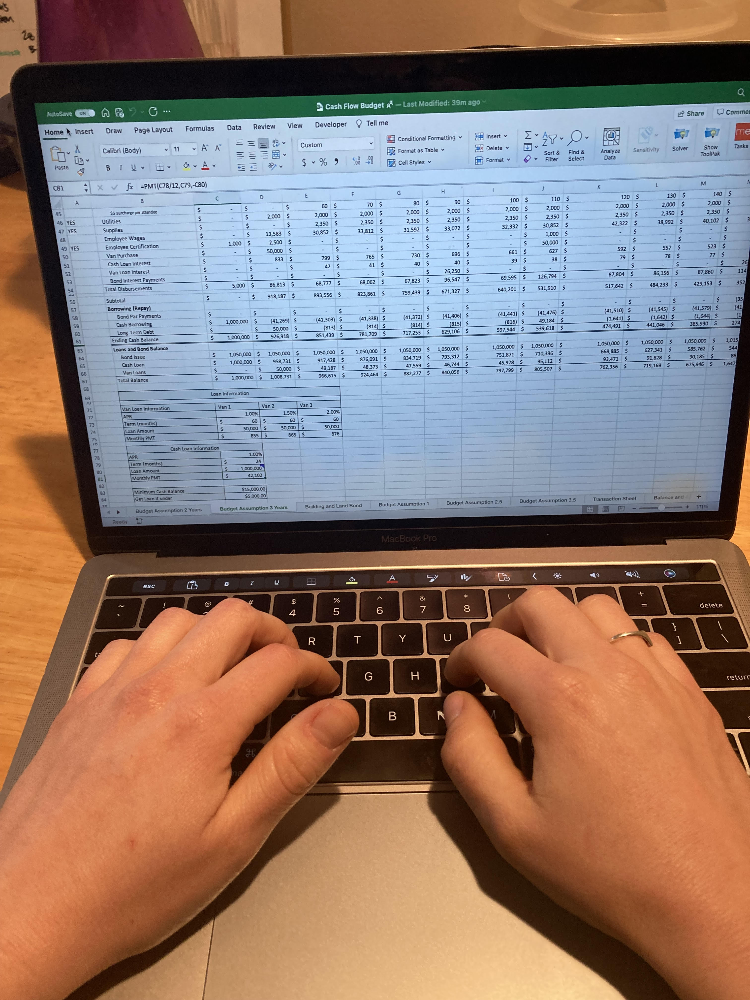

Projected Career Path
An MPA degree prepares students to have careers in the public sector (i.e., government, nonprofit). This summer I have a Management Internship with Vineyard City. As part of this internship, I will be doing a variety of administrative tasks for the city, including preparing their yearly budget document for submission to an annual Government Finance Officers Association competition. This internship, as well as my classes next year, will help me better ascertain what realm of the public sector that I wanted to pursue. I graduate with my MPA degree in April 2023 and will then begin my career in the public sector.
Public Service Experience
- BYU GoodMeasure Student Program Evaluation Designer, January 2022-April 2022
- CVS Health Second Chance Program
- Grantwell Team Member and consultant, 2021-April 2022
- Utah Commission on Criminal and Juvenile Justice
- Girl & Her Backpack
- BYU GoodMeasure Student Analyst, September 2021-December 2021
- Refugee & Immigrant Center, Asian Association of Utah
Anticipated Future Contributions
One of my greatest skills is analyzing and interpreting data. Through my work listed in the previous section, I have been able to use data to measure and interpret social impact. I have experience and skills using Excel, R, Tableau, Python, and many other tools that help me to analyze and interpret data. Wherever I end up in the public sector, I hope to be able to use my data knowledge and skills to both improve my organization as well as the community I am serving. To learn more about what a career using data for social impact could look like, check out the Youtube video below. It is a panel of BYU alumni speaking about their careers using data to create social impact: